הבית שנפתח
אל היער
ארבע סצנות. גלילה אחת. הסיור מתנגן בקצב שלך.
גללו להתחלה
נשארתם עם הנוף בעיניים?
3–5 חדרים · מרפסות שמש עם פתיחה מלאה אל הוואדי · אכלוס 2027
חזרה לתחילת הסיורGREEN EYE · כל הזכויות שמורות

ארבע סצנות. גלילה אחת. הסיור מתנגן בקצב שלך.
3–5 חדרים · מרפסות שמש עם פתיחה מלאה אל הוואדי · אכלוס 2027
חזרה לתחילת הסיור